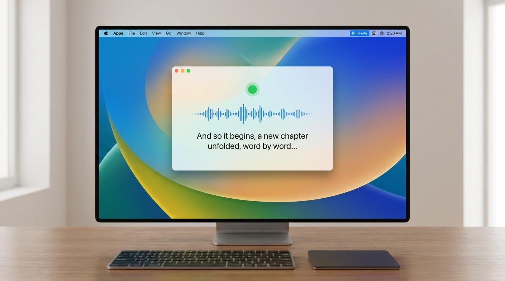
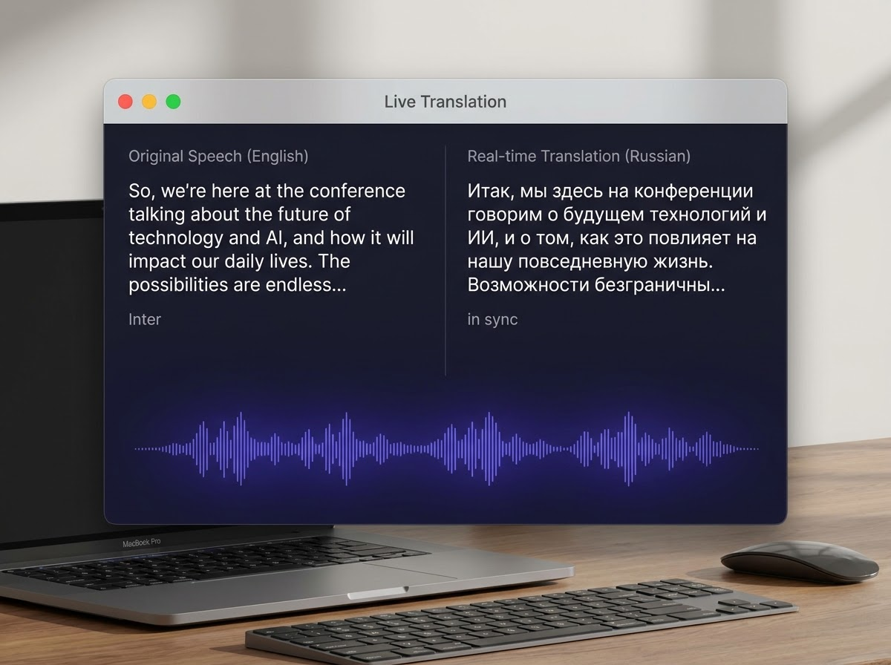
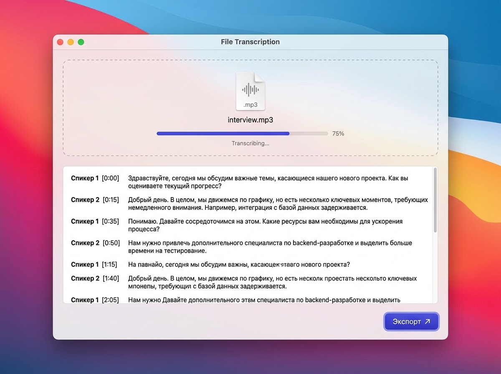

Heardly превращает вашу речь в текст с непревзойденной точностью прямо на вашем Mac. Конфиденциально, быстро и без интернета.

Нажмите хоткей — и говорите. Текст мгновенно вставляется туда, где стоит курсор: почта, мессенджер, документ.

Слушайте на одном языке — читайте на другом. Перевод появляется в реальном времени, пока человек говорит.

Перетащите файл — получите текст с таймкодами и разделением по спикерам. Часовая запись — за минуты.
Работает офлайн — хоть в самолёте
Без облака и чужих серверов — распознавание на устройстве
Ваши записи видите только вы
AI-резюме встречи — итоги одним кликом, тоже локально
История сессий — все транскрипты под рукой
Экспорт текста — заберите результат в один клик
Горячие клавиши — всё управление без мыши
Русский, английский и десятки других языков
Живёт в строке меню — не занимает док и не мешает
Оплата российскими картами — в рублях
Одна минута на установку — и ваш Mac умеет слушать.
Для macOS 14 и новее